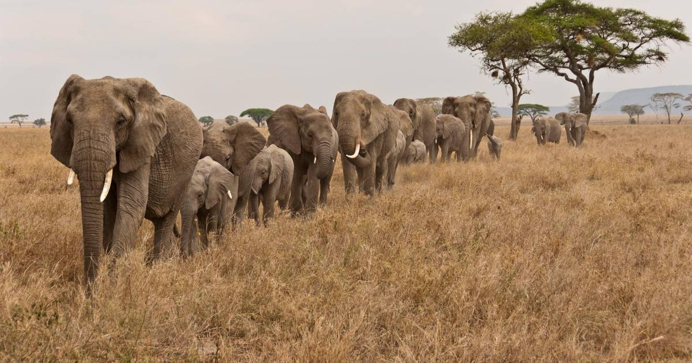
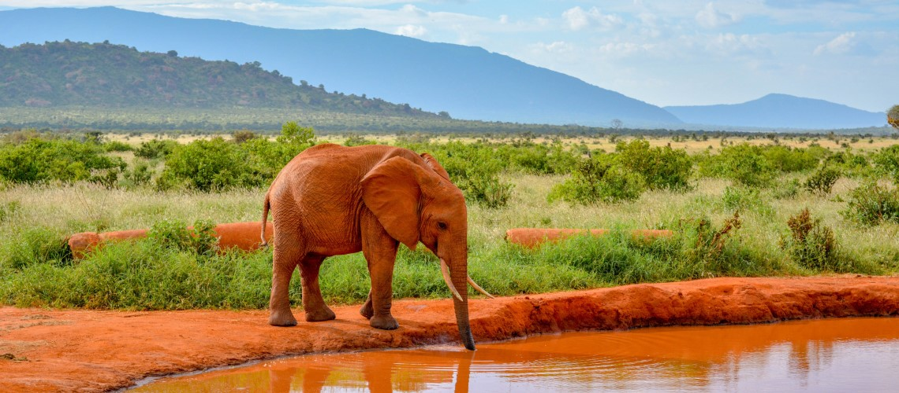

ELEFANTI
Gli Elefanti sono i mammiferi più grandi che vivono sulla terraferma. Nonostante la loro pelle molto spessa, possono accorgersi addirittura se vengono sfiorati anche solo da una piuma. Purtroppo le loro zanne sono molto ambite. I bracconieri cacciano gli elefanti per vendere l’avorio a caro prezzo.
| DIMENSIONE | Altezza alle spalle 2,4-3,2 metri |
| PESO | 2700 chilogrammi - 6000 chilogrammi |
| ETA' | Fino a 70 anni |
| ALIMENTAZIONE | Foglie-Rami-Corteccia-Frutti-erba |
Habitat
Nei paesi africani a sud del Sahara, ad esempio Namibia, Tanzania, Kenya (elefante africano), in diversi paesi dell'Asia, ad esempio India, Thailandia, Vietnam, Cina (elefante asiatico).
Particolarità
Gli elefanti percepiscono i rumori con i loro piedi. Attraverso il terreno, ad esempio, sentono se da lontano un altro pachiderma emette un brontolio.
Minacce
Bracconaggio (dovuto soprattutto all'avorio) e perdita dell'habitat.
Nella famiglia degli elefanti c’è l’elefante africano e l’elefante asiatico. Gli elefanti africani sono più grandi e hanno orecchie più grandi rispetto agli elefanti asiatici. La proboscide degli elefanti africani ha due punte invece di una. Gli elefanti africani sono suddivisi in elefanti della savana ed elefanti della foresta.
Gli elefanti asiatici vivono in luoghi caldi e umidi, trascorrono la maggior parte del tempo nelle foreste tropicali. Gli elefanti africani vivono in foreste, savane, steppe e a volte anche nel deserto. Quando questi pachidermi hanno caldo, sventolano le orecchie. In questo modo il sangue che scorre nelle numerose piccole vene delle orecchie si raffredda.
CURIOSITA'
1. Hanno migliaia di muscoli nella proboscide
Ci sono circa 50.000 muscoli nella proboscide di un elefante, suddivisi in 6 gruppi muscolari, e nessun osso. Ciò è paragonabile ai 639 muscoli dell’intero corpo umano! La cosa più simile alla proboscide di un elefante che abbiamo è la lingua. Gli elefanti usano la loro proboscide per respirare, bere, mangiare, annusare, immergersi, combattere, comunicare, toccare, sentire, tenere, afferrare e spingere. E' difficile pensare a qualsiasi altra cosa che sia così versatile!
2. Sono...poco sportivi
Gli elefanti non sono in grado di saltare o galoppare. Possono solo camminare a varie velocità – da una camminata lenta ad una moderata “passeggiatina” fino ad una veloce “corsetta” durante la quale il passo resta lo stesso ma le velocità delle gambe aumenta. La velocità massima che raggiungono è di 24 km/hr.

4. ...Battono anche i segugi!
Si stima che l’olfatto degli elefanti sia quattro volte maggiore di quello di un segugio e 160 volte superiore a quello di un umano. Sono in grado di riconoscere l’odore dell’acqua a molti chilometri di distanza.
5. Sono indispensabili per alcune piante
Molte specie di alberi fanno affidamento sugli elefanti per diffondere i loro semi. Ma questo non è tutto. Molti semi hanno maggiori probabilità di germogliare dopo essere passati attraverso l’intestino di un elefante. Gli elefanti trasportano questi semi per molti chilometri mentre elaborano il cibo, prima di depositarli con i loro escrementi. Questi ultimi sono fertilizzanti fondamentali, ricchi di umidità e quindi un impulso alla vita.
6. Forniscono l'acqua a tutti
Durante la stagione secca gli elefanti forniscono l’accesso all’acqua ad altre specie. Scavano delle buche nei letti dei fiumi asciutti per arrivare all’acqua in profondità – disponendola così a quelle specie che non sono in grado di farlo. Inoltre allargano e compattano il fango per dare forma a dei grandi stagni, sempre in modo da fornire l’acqua a tutti gli altri animali. Questo sì che è altruismo!

Se vuoi contattarci compila il form con i tuoi dati
Contatti
Resta aggiornato e seguici sui social